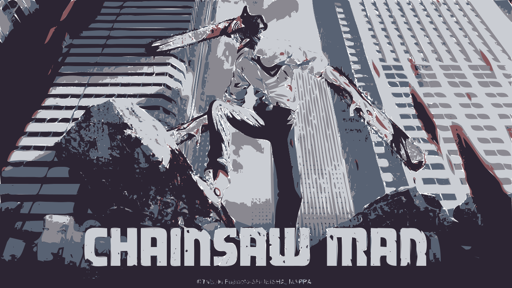
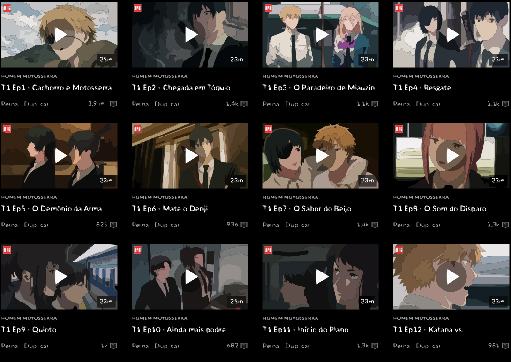

Chainsaw Man
2022
9.0
Ação
Shounen
Sobrenatural
Denji é um adolescente que mora com Pochita, o Demônio da Motosserra. Por conta das dívidas que herdou de seu pai, ele vive na miséria, exterminando outros demônios com Pochita para pagar as contas. Até que, um dia, Denji é traído e morre. Em seus últimos momentos de consciência, ele firma um contrato com Pochita e renasce como o Homem-Motosserra - um humano com coração de demônio.
Episódios e Temporadas
Temporada 1
